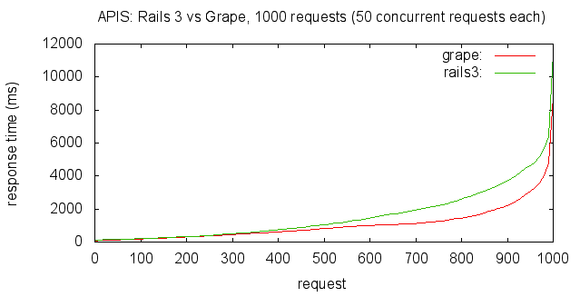

Grape is a REST-like API micro-framework for Ruby. It is built to complement existing web application frameworks such as Rails and Sinatra by providing a simple DSL to easily provide APIs. It has built-in support for common conventions such as multiple formats, subdomain/prefix restriction, and versioning.
Pros:
config/routes.rb
resources:artists
app/controllers/artists_controller.rb
class ArtistsController < ApplicationController
def index
@artists=…
#allkindsofstuffthatservesviews
respond_todo |format|
format.html { @artists }
format.json { render json: @artists.as_json }
end
end
end
app/views/artists/index.json.erb
-@artists.each do |artist| {
'first_name':'<%=@artist.first_name.to_json%>',
'last_name':'<%=@artist.last_name.to_json%>'
}
class ApiController < ApplicationController
self.responder = ActsAsApi::Responder
respond_to :json, :xml
end
class UsersController < ApiController
def show
@user = User.find(params[:id])
respond_with @user, :api_template => :name_only, :location => user_path(@user)
end
...
def destroy
@user = User.find(params[:id])
respond_with(@user.destroy, :api_template => :name_only)
end
end
lib/api.rb
class HbServer::API < Grape::API
format :json
version 'v1', using: :path
helpers do
end
resource :pictures do
get ':id' do
Picture.find(params[:id]).to_json
end
get ':id/tags' do
{ tags: Picture.find(params[:id]).tags.to_json }
end
end
end
resource :users do
get do
User.all.to_json
end
get ':id' do
User.find(params[:id]).to_json
end
resources ':id/pictures' do
get do
User.find(params[:id]).pictures.to_json
end
end
resources ':id/tags' do
get do
"#{params[:callback]}(#{User.find(params[:id]).tags.to_json});"
end
end
end
config.ru
# This file is used by Rack-based servers to start the application.
require ::File.expand_path('../config/environment', __FILE__)
require 'api.rb'
run HbServer::API
Grape averages 47.21 req/sec Rails 3 averages 31.41 req/sec
http://blog.solid1pxred.com/post/16487806979/building-an-api-rails-3-vs-grape